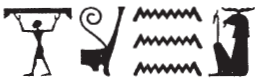
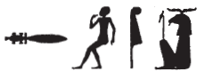
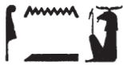
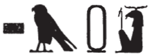
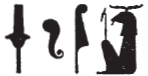
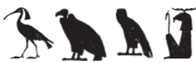
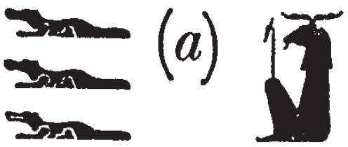
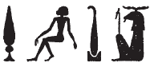
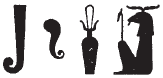
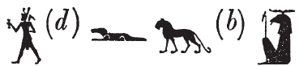

Column 16 (364-374)
Esna 364
- Location: Column 16
- Date: Domitian
-
Hieroglyphic Text
- Bibliography: See entries in Tempeltexete 2.0
Answ.t-bỉty
nṯr šps
wr.tw r nṯr.w
ḥtp m ḥw.t-ẖnmw
ḥr qdỉ ḥr nḥp
ỉt zȝ.w-n=sn
ỉr nn r-ȝw
ẖnmw-Rʿ nb tȝ-sn.t
A The King of Upper and Lower Egypt,
the august god,
greatest of the gods,
who rests within the Temple of Khnum,
building upon the potter’s wheel.
Father of the guardian deities,
who made all this in its entirety:
Khnum-Re473 Lord of Esna.
Bnsw.t-bỉty
ḫʿỉ m sšn
sḥḏ ỉr.ty n nṯr.w rmṯ
ṯḥn ỉnm=sn
snfr ỉb=sn
ḥr nb ḥʿʿ.tw r mȝȝ=f
ẖnmw-Rʿ nb sḫ.t
B The King of Upper and Lower Egypt,
who arises from the lotus,
luminous of eyes for gods and people,
who scintillates their skin,
and pleases their hearts,
so everybody rejoices to see him:
Khnum-Re Lord of the Field.
Esna 365
- Location: Column 16
- Date: Domitian
-
Hieroglyphic Text
- Bibliography: None
Cartouches of Domitian, Khnum, Heka, Menhyt, and Nebtu. Conventional spellings.
Esna 366
- Location: Column 16
- Date: Domitian
-
Hieroglyphic Text
- Bibliography: Sauneron 1962, pp. 164-165; Rüter 2003, pp. 69-72; see also Tempeltexte 2.0
NB: This hymn continues from Esna 277 .
§14 bis 
1snḏ n ẖnmw
nȝ nty ỉȝd(.w) m ỉȝd.t
sbḥ n=f
nṯr pfy ẖr p.t
wbȝ=f n=t((n) zȝ.t=f Nw.t
m fd.t ȝb=tn
1 Have fear for Khnum,
those who lack moisture!
Cry unto him,
this god bearing the sky:
he will open his daughter Nut for you,
with the rain (lit. sweat) you desire.
§15
snḏ n ẖnmw
ṯȝy.w ḥmw.wt
nty(.w) mr ṯz pr.t=sn
ntf kȝ 2sṯỉ
ḥry ỉd.wt
nn sȝq ẖ.t gȝy
m kȝ.t=f
Have fear for Khnum,
men and women
who desire to bind their seed.
He is the procreating 2 bull,
who mounts the females:
an empty womb is never assembled
through his work.
§16 
snḏ n ẖnmw
ỉwr.(w)t
thỉ=sn dmḏy.t=sn
ntf Šw ḫnty pr-ms
r sš ỉd.wt
ṯz msḫn.t
m ỉrw=f n Ỉmn
Have fear for Khnum,
pregnant women
who have passed their due date.
He is Shu, foremost of the Mammisi,
in order to open up wombs
and bind the birthbrick,
in his visible form of Amun.
§17 
3snḏ n ẖnmw
wr.w nḏs.w
zȝ.w ḏd grg
ḥr rw.t-dỉ-mʿȝ.t=f
ḥw pfy
nb šsr.w
mrỉ mȝʿ.t
qnd ḥr grg
bwt=f pw rdỉ ḥr gs
3 Have fear for Khnum,
great and small!
Avoid telling lies
in his portal of justice.
This (god) Hu,
lord of statements,
who loves Maat,
and is furious about lies:
partiality is his abomination.
§18 
snḏ n ẖnmw
nty m ḫȝ n sḏm.w
ntf 4ỉty n šmʿ-mḥw
ḥqȝ n ḫȝs.wt nb.w
nb n ḫt-mn r-ȝw=f
Have fear for Khnum,
those in the Hall of Judges!
He is 4 the sovereign of all Egypt,
ruler of all foreign lands,
and Lord of the entire earth.
§19 
snḏ n ẖnmw
nty(.w) m srḫ
m b(w)ȝ.w ḥnʿ wsr.w
ntf zmȝ mȝʿ.t
rdỉ mȝʿ[.t]
n mȝr.w mỉ wsr.w
Have fear for Khnum,
those who are in the palace,
great and mighty people!
He is the companion of Maat,
who gives Maa[t]
to both the weak and the strong.
§20
5snḏ n ẖnmw
ʿw.t nb.w
nty(.w) šm ḥr ỉfd.w=sn
ntf nb šȝs-ḥtp
qdỉ tn
m nfw n rȝ=f
sšm=f tn m sḫr.w=f
n wr mdw
5 Have fear for Khnum,
all livestock
who walk upon their four legs!
He is the Lord of Shas-hotep,
who modeled you
with the breath of his mouth;
he guides you in his condition
of the one Great of Staff.
§21 
snḏ n ẖnmw
ȝpd.w 6msw.w ww
ntf nb sḫ.t
sḫp(r) ỉḫt nb.w
wn ʿnḫ=tn
m ȝḫ.w
n ȝḫ.t=f
Have fear for Khnum,
birds 6 and children of the field.
He is Lord of the Field,
who produces all things.
That you live
is from the brilliant products (ȝḫ.w)
of his brilliant field (ȝḫ.t).
§22 
snḏ n ẖnmw
rm.w ỉmy.w mw
ntf nb Qbḥw
sd s.t=f
wbȝ qr.ty
r bʿḥ=tn m bʿḥ=f
Have fear for Khnum,
fish that are within the water!
He is the Lord of the First Cataract,
who breaks its lock,
and opens up the grottoes,
to inundate you with its flood.
§23 
7snḏ n ẖnmw
ḏdf.w nty(.w) m bȝbȝ=sn
wn=ṯn ḥr ỉnr nty kȝ=f
nỉ ḫpr wʿ ḫnt=tn
m ḫm ḥm=f
7 Have fear for Khnum,
reptiles in their holes!
You dwell on the stone of his Ka,
and not even one of you can exist
without his Majesty knowing.
§24 
snḏ n ẖnmw
šȝ.w nb(.w)
ḥnʿ sm.w ỉry
ẖnm.t ww
sṯnỉ 8ḥr rmn dšr.t
n kȝ=f
nfw=f pw
ȝḫȝḫ gmḥ.w=tn
mȝȝ r p(ȝ) wḫȝ n mḥty
Have fear for Khnum,
all fields
along with all their plants!
The cistern and the field,474
the white crown supports the red crown
for his Ka.475
For it is his breath
which makes your petals blossom.
(Look to the northern column Esna 355)
§25 
snḏ n ẖnmw
nȝ nty(.w) šm n bw nb.w
ntf zȝw mnḫ
Have fear for Khnum,
those who travel in any place!
He is the effective guardian…
NB: This hymn continues in Esna 355.
Esna 367
- Location: Column 16
- Date: Domitian
-
Hieroglyphic Text
- Bibliography: Sauneron 1962, pp. 176-177; Quack 1995 (extensive commentary); Leitz, Löffler 2019, p. 58.
NB: This hymn is a continuation of Esna 356.
9ỉ pȝ nty ỉw fkȝ=f
qd-sʿnḫ
10ỉ pȝ mnḫ-ỉb
nty ỉw bwt=f whn
11ỉ pȝ nty ỉw sšm=f
ḥr qd ḫnt ḥw.t-nmỉ.t
12ỉ pȝ nb šȝy rnn.t
nwḏ ḥr msḫn.t
13ỉ tȝ-ṯnn
nty ỉw kȝ 4 r-ʿ=f
14ỉ pȝ ẖnmw
ỉr ẖnm.w 7
15ỉ qmȝ ḥmw.wt
qd ỉqd.w
16ỉ pȝ nty m-ḫnty ỉtr.ty šmʿ
ḫnty ỉtr.ty mḥw
17ỉ pȝ ỉwn
nty šm ẖr p.t ḥr tȝ
rʿ nb
18ỉ pȝ ỉr twȝ Nw.t
m ḫprw=f n Ḥḥ
19ỉ pȝ nty ỉw tȝ grg.w
m kȝ.t=f
9 O he whose reward
is building and enlivening.
10 O beneficent of heart,
whose abomination is destruction.
11 O he whose sacred image
molds pottery within the mammisi.
12 O lord of Shay and Renenet,
who assembles on the birth-brick.
13 O Tatenen,
who has the Four Kas at his disposal.
14 O Khnum
who made the Seven Khnums.
15 O he who created the artisans,
builder of builders.
16 O he who is foremost of the chapels
of Upper and Lower Egypt.
17 O pillar of air
who travels under the sky and above earth
every day.
18 O he who lifts up Nut
in his manifestation of Heh.
19 O he through whose work
the entire earth is populated.
20ỉ pȝ bȝ šfy.t-ḥȝ.t
ḥȝ.t n psḏ.t
21ỉ pȝ ỉw dwȝ n=f
pr(.w) nb.w ḥr nḥp=f
* *
22ỉ pȝ ỉr n=f ms.w=f
ỉȝw m ḥr=f nfr
23ỉ pȝ mnỉw mnḫ
n tȝ ḥr-ȝw=f
24ỉ pȝ nfy ỉqr
(n) nȝ nty m Nwn
25ỉ pȝ ỉr zȝw Rʿ
m n.t
26ỉ pȝ ỉr nḏ Ỉtm
[ḥr pȝ] tȝ
27ỉ pȝ nb sḫn
mrỉ snsn
28ỉ pȝ nty ỉw sn.t=f ḥnʿ=f
m-ẖnw Ỉwny.t
20 O Ba, prestigious of face,
beginning of the Ennead.
21 O he whom worship
all who came forth on his potter’s wheel.
22 O for whom his children
make praise before him.
23 O beneficent herdsman
for the entire earth.
24 O excellent breath of air
for those who are in Nun.
25 O he who guards Re
in the waves.
26 O he who protects Atum
[upon the] earth.
27 O lord of union,
who loves embraces.
28 O he whose sister is with him
inside of Iunyt.
This hymn continues in Esna 368.
Esna 368
- Location: Column 16
- Date: Domitian
-
Hieroglyphic Text
- Bibliography: Sauneron 1962, pp. 177-178; Quack 1995 (extensive commentary).
NB: This hymn is a continuation of Esna 367.
28ỉ pȝ nb sḫ.t
ỉr ḥqȝ ww
ỉ pȝ ỉr ẖr.wt
n qd.n=f
m pr m sḫ.t=f
ỉ pȝ nb ʿnḫ
nty ỉw ỉḫt nb r-ḫt=f
ỉ pȝ ḥry-wḏb
ỉr wp tȝ
30ỉ pȝ ỉr dỉ ḥtp.w-nṯr.w
r ȝbw.t=f
n nṯr.w nb.w
ỉ pȝ ʿḫỉ ḥʿpỉ m ḫy=f
ỉ pȝ ỉȝḫḫ šn.w nb ỉm=f
ỉ pȝ nb pḥty
wr nmt.t
31ỉ pȝ nhs
ʿȝ hmhm
ỉ pȝ nb nrw
nʿš dnỉ.t
ỉ pȝ wr bȝw n šmʿ-mḥw
ỉ pȝ nty ỉw wḏȝ n tȝ-ḥr-ḏr=f
ẖr s.t-ḥr=f
28 O Lord of the Field,
ruler of the agricultural domain.
O he who makes food
for those he created
with the products of his field.
O Lord of Life
at whose disposal are all things.
O chief of agriculture (ḥry-wḏb),
who divvies up the land.
30 O he who gives divine offerings
however he wishes,
to all the gods.
O he with whose ascent Hapi rises.
O he through whom all trees blossom.
O Lord of strength,
great of stride.
31 O fierce lion,
great of growl.
O Lord of fear,
fierce of shout.
O great of power
in Upper and Lower Egypt.
O he under whose control
is the health of the entire world.
32ỉ pȝ mnỉw nfr
ỉr ḥqȝ qn.w
ỉ pȝ mrỉ mȝʿ.t
mḥ-ỉb n ỉr s(y)
ỉ pȝ nty ỉw ȝḫ
m ỉr.n=f nb.w
ỉ pȝ nṯr šps
ỉwty smh
33ỉ pȝ ỉr šm ḥr kȝḥ
ỉmỉtw zȝ.w-n=sn
ỉ pȝ ỉw ršw Rʿ n mȝȝ=f
ỉ pȝ ỉw ỉr n=f nb-ḏr ỉmỉ.t-pr
ỉ pȝ nsw nfr
ỉr ḫʿỉ ḥr ns.t n Ḫ[r]
34ỉ pȝ ȝms-ỉb
nty ỉỉ n ʿš n=f
32 O good herdsman,
chief of the brave.
O he who loves Maat,
and trusts whomever performs it (Maat).
O he of whom there is excellence
in all he has made.
O august god,
who never forgets.
33 O he who goes upon the earth,
amidst the Guardian Deities.
O he at whose sight Re rejoices.
O he to whom the All-Lord gave the inheritance.
O good king,
who appears upon the throne of Ho[rus].
34 O compassionate one,
who comes to whomever calls unto him.
ỉw n=ỉ ḥr=k nfr
m ḥtp zp-snw
ẖnmw-Rʿ nb tȝ-sn.t
nṯr šps
mnḫ mnw.w
nb=ỉ ỉm=k
ḥm=k [ỉm=ỉ]
35fqȝ.tw m ȝḫ.w=k
m.k ỉb=ỉ ḥr mṯn=f rʿ-nb
ḥtp ḥr=k nfr
n nsw.t-bỉty
nb tȝ.wy
(ȝwtwgrtwr k[ys]rs)|
zȝ-Rʿ nb-ḫʿ.w
(twmtyns nty-ḫwỉ)|
36rwḏ nṯry=k
m grg tȝ pn
ḏ.t n-mḏ
mȝȝ r ḏsr-kȝ=f
n pȝ wḫȝ mḥty
May your good face be towards me
in peace, in peace!
Khnum-Re, Lord of Esna,
August god,
effective of monuments.
You are my lord,
and [I am] your servant,
35 rewarded with your excellent deeds.
Behold my heart is on your path, daily!
May your face be kind
to the King of Upper and Lower Egypt,
Lord of the Two Lands,
(Autokrator C[aes]ar)|
Son of Re, Lord of Appearances,
(Domitian Augustus)|
36 May your heart be steady
in populating this earth,
for all eternity.
(Now look to ‘Sanctifying his Ka’
on the column to the north = Esna 358).
The conclusion to this hymn is in Esna 357.
Esna 369
- Location: Column 16
- Date: Domitian
-
Hieroglyphic Text
- Bibliography: Sauneron 1962, p. 186; Leitz, Löffler 2019, p. 15, §15f; see also Tempeltexte 2.0
36pȝ ỉrw n ẖnmw
ḥnʿ psḏ.t=f
ỉr(.w) r ḏsr nb
m-m pr.w nb.w ḥr nḥp=f
37ḥr sỉȝ ỉr.n=f
nb.w tȝ-sn.t m qỉ=sn
r rdỉ(.t) ỉr=f bw nfr
ḫr ḥm=sn
ỉr=tw nsw.t
m ẖrd ḥr nḥp=f
ḥr nty Ḥr pw
38ḥr nty Ḥr pw
ỉr nḫn nb
zȝ Ỉs.t pw
ỉn kȝ.w
ḏd.ḫr=sn ỉrw=sn nb nfr
m ḏsr ḥm=f
mȝȝ r ḏd ỉn
ẖnmw nb tȝ-sn.t
36 The ritual of Khnum
together with his Ennead,
performed to sanctify the Lord
among all who came forth upon his wheel,
37 perceiving what he did.
The Lords of Esna are assembled,
to let him (Khnum) perform a good deed
before their Majesties.
The king is made
as a child upon the Potter’s Wheel,
because he is Horus
38 (because he is Horus).
‘As for any (royal) child
he is the Son of Isis!’
so say the Kas.
Then they will recite all their good speeches476
while sanctifying His Majesty.
(Look to what is spoken by
Khnum Lord of Esna) (cf. Esna 300 ).
Esna 370
- Location: Column 16
- Date: Domitian
-
Hieroglyphic Text
- Bibliography: None
- Compare the symmetric inscription Esna 359
39ʿnḫ nṯr nfr
ỉmy-rȝ ʿ-rsy
mỉ nb Qbḥw
stỉ tȝ.wy mḏȝy.w
ẖr ỉḫt=sn
nfr.w nw Kns.t
mḥ ḥw.t-ẖnmw
m nfr.w=s
n ḫnty-ḥn-nfr
(tmdyns nty-ḫwỉ)|
mry ẖmnw-Rʿ nb tȝ-sn.t
39 Live the good god,
Overseer of the Southern District,
like the Lord of the First Cataract
who compels the Medjay lands,
bearing their products,
the good things of Kenset;
who fills the Temple of Khnum
with its good products
from Khent-hen-nefer.
(Domitian Augustus)|
beloved of Khnum-Re Lord of Esna.
Esna 371
- Location: Column 16
- Date: Domitian
-
Hieroglyphic Text
- Bibliography: See Tempeltexte 2.0
Formula
1ỉ(ȝ)w n=k ẖnmw
bȝ šfy.t-ḥȝ.t
ḫnty Ỉwny.t
dwȝ s(w) nṯr.w
ỉḫḫ s(w) nṯry.t
m nb nḥp.n=sn
swȝš=ỉ kȝ=k […]
1 Praise to you, Khnum!
Ba, with a ram head,
foremost of Iunyt.
He who the gods praise,
and the goddesses acclaim,
as the lord who fashioned them.
I worship your Ka […]
The King
2nsw.t-bỉty
nb tȝ.wy
(ȝwtwgrtwr kysrs)|
3zȝ Rʿ
nb ḫʿ.w
(twmtyns nty-ḫwỉ)|
4[…]
5qmȝ nfrw
n wtṯ s(w)
6sḥtp nb nḥp
m sȝḫ.w=f
7nṯr nfr
wtṯ n ʿm-tȝ.wy
bẖ.n s(w) ḥnw.t pr-(mḏȝ.t)
ȝḫ-rȝ
šd ḥby.wt
sfg-ỉrw m nȝy=f drf.w
nḏm mdw
mnḫ tp.w-r’.w
sḥtp ḫntyp-pr-ʿnḫ
m ȝḫ.w=f
nb mdw
(twmtyns nty-ḫwỉ)|
2 The King of Upper and Lower Egypt,
Lord of the Two Lands,
(Autokrator Caesar)|
3 Son of Re,
Lord of Appearances,
(Domitian Augustus)|
4 […]
5 who creates good things
for he who begot him;
6 who pacifies the Lord of the Potter’s Wheel
with his transfiguration spells.
7 The good god,
begotten of World-Knower (Thoth),
born of the Mistress of the House (of Books).
Excellent of mouth,
who recites festival texts;
He who is Unknowable of form
through his texts;
sweet of voice,
excellent of utterances,
who pacifies Foremost of Per-ankh
with his excellent words.
Lord of speech:
(Domitian Augustus)|
Khnum-Re Lord of Esna
8ḏd-mdw n ẖnmw-Rʿ nb tȝ-sn.t
Ptḥ […]
9ỉt nṯr.w
šȝʿ ḫp(r)
nỉ ḫpr ḫpr.w
pr nn sỉȝ ỉrw=f
qdỉ rmṯ.w
10ỉr nṯr.w
ẖnm ḥr.w-nb.w
ḥr nḥp=f
11dỉ=ỉ n=k tȝ-mrỉ
ḥr ỉr(.t) n=k ỉȝw
mn.t[w] ḫʿ.t[w]
ḥr ns.t […]
8 Words spoken by Khnum-Re Lord of Esna,
Ptah […]
9 Father of the gods,
who began creation,
when nothing else existed;
who came forth but was not not perceived.
He who built humans,
10 who made the gods,
and modeled everybody
upon his potter’s wheel.
11 I give you Egypt
making praise for you.
You remain and appear in glory
upon the throne […]
Menhyt
12ḏd-mdw n Mnḥy.t wr.t
nb(.t) ḫnt-tȝ
Sḫm.t ʿȝ.t
mr.t Ptḥ
13ʿȝ mrw.t ḫnt nṯr.w
mḥn.t ḥr tp n nṯr nb
nn nṯr
mḥn=f s(w) ḥr tp=s
ḥȝy.t 14Rʿy.t
sḥḏ(.t) tȝ.wy
m mȝwy=s
15dỉ=ỉ snḏ=k
m tȝ.wy ḫȝs.wt
ḥr.w-nb.w rwḏ.(w)
ḥr s[wȝš ḥm=k]
12 Words spoken by Menhyt the great,
Lady of Khent-ta,
Sakhmet the great,
beloved of Ptah;
13 great of love among the gods;
coiled uraeus on the head of every god,
without there being any god
who might coil upon her head.
The shining 14 Rayet,
who illumines the two lands
with her rays.
15 I place fear of you
in domestic and foreign lands;
everybody are committed
to prais[ing your Majesty].
Heka
16ḏd-mdw n ḥkȝ p(ȝ) ẖrd
ʿȝ wr tpy n ẖnmw
sḏ ỉqr
nn 17mỉt.t=f
ḥwnw nfr
ḏf(ḏ) n wḏȝ.t
pʿpʿ.n sw 18mw.t=f
m-ẖnw Ỉwny.t
m sw tpy tpy n šmw
16 Words spoken by Heka the Child,
the very great, first-born of Khnum;
excellent child,
without 17 his like;
good youth,
iris of the wedjat-eye.
His mother bore 18 him
within Iunyt,
on day 1 of I Shomu (= Pakhons I).
Behind the Divinities
19nsw.t-bỉty
bȝ ʿȝ ỉrw
štȝ ḫprw
nn rḫ sštȝ.=f
nbỉ ḥḥ(.w)
wtṯ ḥfn.w
dỉ ṯȝw n srq.w-ḥty.t
wr bỉȝ.wt ḫnt nṯr.w
rḫ.n=f
qmȝ [tȝ p]n(?) m šȝʿ
ẖnmw-tȝ-ṯnn
ỉt nṯr.w
19 The King of Upper and Lower Egypt,
Ba, great of visible form,
remote of manifestation,
whose secret image cannot be known.
He who fashioned millions,
who begot myriads,
and gives air to the living.
Great of oracles among the gods,
whom he knew;
who creates [th]is [earth] (?) in the beginning:
Khnum-Tatenen,
father of the gods.
Esna 372
- Location: Column 16
- Date: Domitian
-
Hieroglyphic Text
- Bibliography: See Tempeltexte 2.0
Formula
1mn n=k Ḥḥ
ty.t n ḏ.t=k
ẖnm.tw ḥnʿ […]
[…]
2ʿȝ bȝw=k
ḥr rmn zȝ.t=k
bs=k štȝ ḥr […]
[…Nw].t
1 Take to yourself Heh,
the image of your body,
united with […]
[…]
2 Your power is great
while supporting your daughter,
you mysterious image is […]
[…Nu]t.
The King
3[nsw.t-bỉty]
[nb tȝ.wy]
(ȝwtwgrtr k[y]s[rs])|
4zȝ-Rʿ nb-ḫʿ.w
(twmtyns [ḫwỉ])|
5ỉwʿʿ n Šw
rmn Ḥḥ [n] nb=f
6nṯr nfr
ỉỉ m ʿbw
ʿ.wy=f ẖr Ḥḥ
ḥfn.w ẖnm[.w…]
[…] ẖnm […] šps
m ỉrw=f
rnp.wt=f mỉ zȝ-Ỉs.t
(twmtyns nty-ḫwỉ)|
3 [The King of Upper and Lower Egypt,]
[Lord of the Two Lands]
(Autokrator C[ae]s[ar])|
4 Son of Re, Lord of Appearances
(Domitian [Augustus])|
5 Heir of Shu,
who supports Heh [for] his lord.
6 The good god,
who comes in purity,
his arms bearing Heh,
frogs united with […]477
[…] united […] august
in his form.
His years are like the Son of Isis
(Domitian Augustus)|
Khnum Upon his Great Throne
7[ḏd-mdw n] ẖnmw-Rʿ
ḥry-s.t=f wr.t
ḥr-ỉb Ỉwny.t
[…] 8[…]
[…Nw].t
wṯz p.t
m nfw n 9[…]
[…] tȝ m rȝ-ʿ.wy=f
ḥry wḏb
[…] 10[…] mỉt.t=f
7 [Words spoken by] Khnum-Re
who is upon his great throne
within Iunyt.
[…] 8 […]
[…Nu]t,
who lifts up the sky
with the breath of 9 […]
[…] the earth through his handiwork;
Chief of the land
[…] 10 […] his equal.
Nebtu
11ḏd-mdw n Nb.t-ww
ỉr.t-Rʿ ḥr(.t) s.t[=s wr.t]
[…]
[…] 12ỉqr(.t)
mnḫ sḫr.w
mḥy.t nfr.t
ẖnm(.t) sn=s
13nṯr.t ḫw(.t) zȝ=s mr=s
ṯnỉ(.t) [sw?] r nṯr.w
14dỉ=ỉ n=k […]
m mȝʿ-ḫrw
11 Words spoken by Nebtu
Eye of Re, upon [her great] throne
[…]
[…] 12 excellent,
effective of plans;
the Good North-wind
who unites with her brother;
13 the goddess who protects her beloved son,
and distinguishes [him?] above the gods.
14 I give you […] in justification.
Behind the Divinities
15nsw.t-bỉty
Ḥḥ wṯz Nw.t
smn štȝ.t
m rȝ-ʿ.wy=f
wr ḥz.wt m-m nṯr.w
ʿȝ ỉrw ḫnt psḏ.t
p.t ḥr tp=f
tȝ ẖr rd.wy=f
(ḥr) swḏȝ ỉmy.w dwȝ.t
m nfw=f
ẖnmw ỉr p.t ḥnʿ ỉmỉ=s
15 The King of Upper and Lower Egypt,
Heh who lifts up Nut,
who makes firm the firmament
with his actions.
Great of praise among gods,
great of form478 within the Ennead.
The sky is on his head,
the earth beneath his feet,
reviving those within the Duat
by means of his breath:
Khnum who made the sky
and those within it.
Esna 373
- Location: Column 16
- Date: Domitian
-
Hieroglyphic Text
- Bibliography: See Tempeltexte 2.0
A[nṯr nfr …]
ỉr ȝḫ.w
n qmȝ wnn.t
sḥtp nb nḥp
m nfrw=f
nb ḥknw
(twmtyns nty-ḫwỉ)|
ʿnḫ(.w) ḏ.t mỉ-Rʿ
A [The good god…]
who performs benefactions
for he who created what exists;
who pacifies the Lord of the Potter’s Wheel
with his perfection;
Lord of praise,
(Domitian Augustus)|
living eternally like Re.
Bmry […]
nn nṯr snỉ sw r ḥm=f
nỉw.wt spȝ.wt grg(.w)
n rn=f
B Beloved of […]
without a god resembling His Majesty,
cities and nomes are founded
in his name.
Cnṯr nfr
snw n Šw
ḫmt.nw ỉm=f n twȝ Nw.t
nb qn
(ȝwtwgrtwr ksrs)|
ʿnḫ(.w) ḏ.t mỉ-Rʿ
C The good god,
second of Shu,
he is the third of He who Lifts up Nut,
Lord of might,
(Autokrator Caesar)|
living eternally like Re.
Dmry ẖnmw-Rʿ
ḥry s.t=f wr.t ḥr-ỉb Ỉwny.t
Ḥḥ twȝ Nw.t
m qmȝ.n ỉb=f
Ỉwn sʿnḫ qmȝ.n=f
D Beloved of Khnum-Re
upon his Great Throne within Iunyt.
Heh, who lifts up Nut
through what his mind created.
Iun, who enlivens what he created.
Esna 374
- Location: Column 16, base
- Date: Domitian
-
Hieroglyphic Text
- Bibliography: None
Minor inscriptions. Cartouches of Domitian, name of Heka.